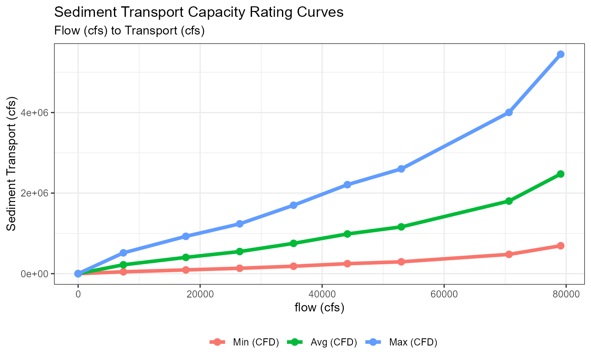
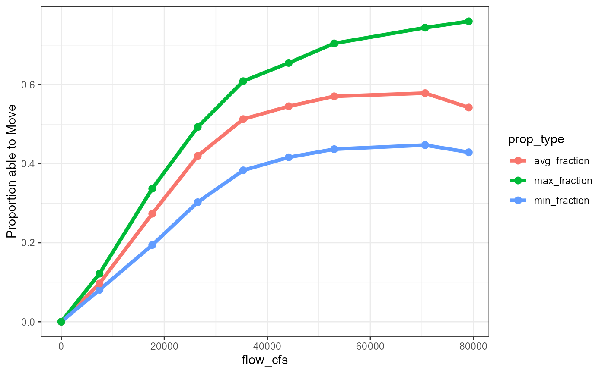
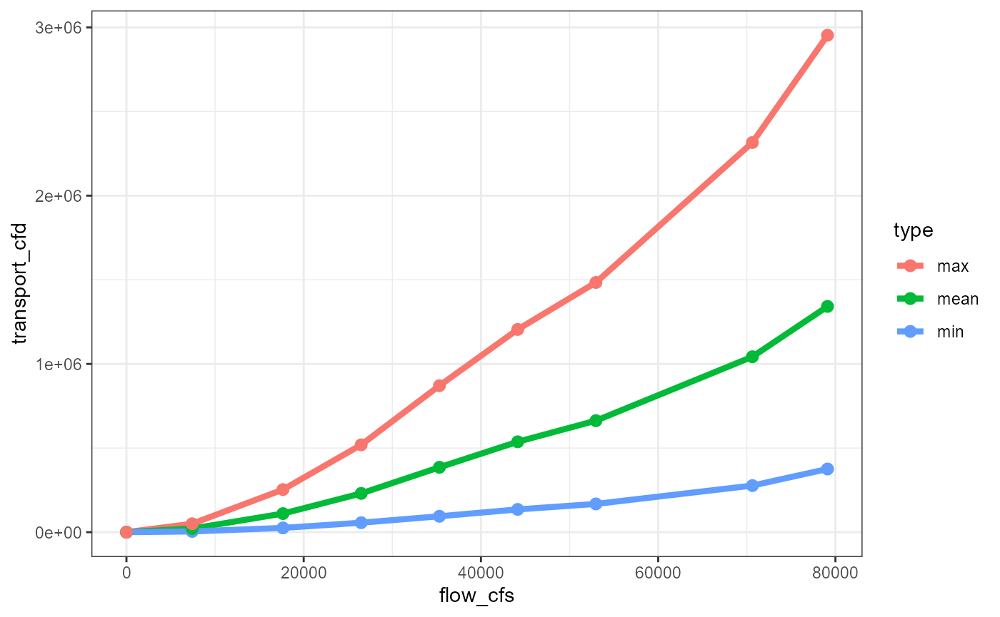
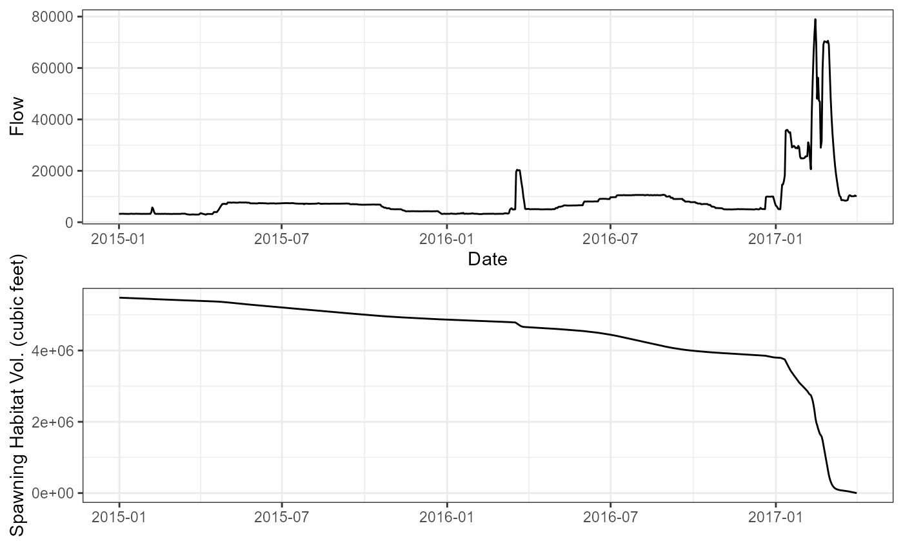
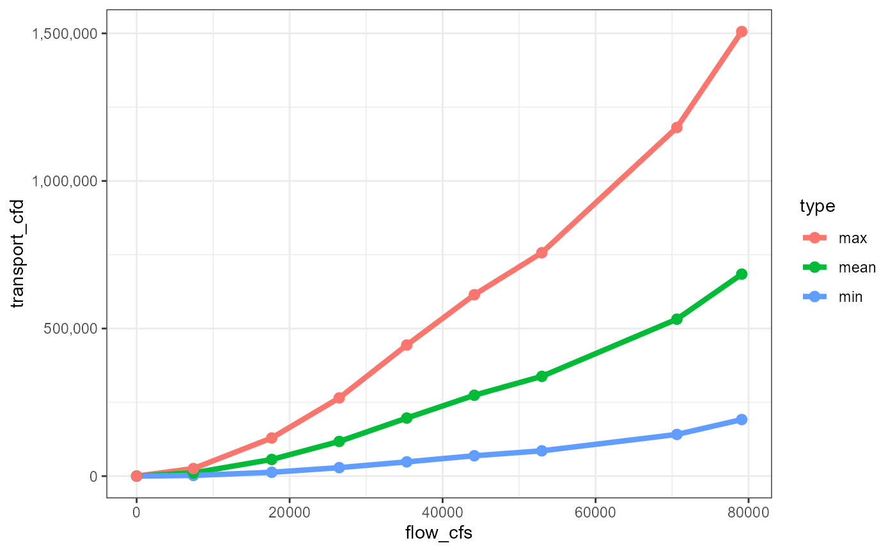
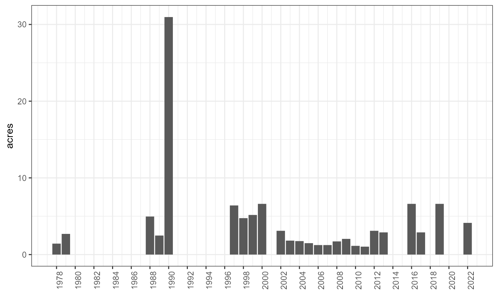
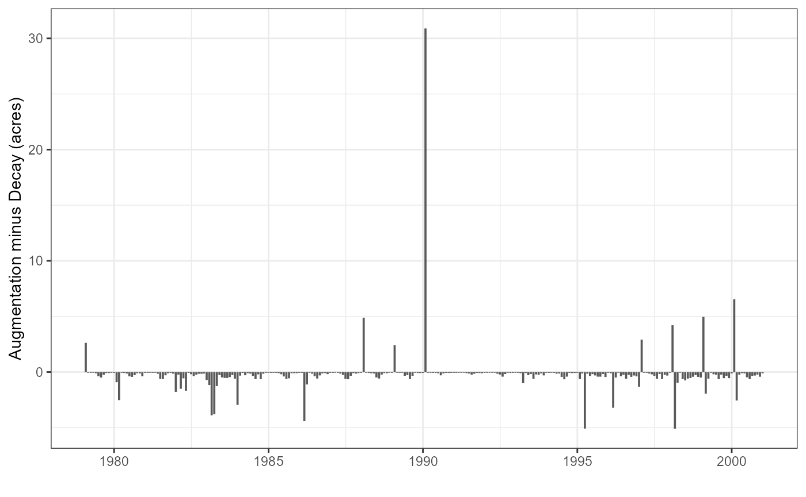

flow-driven-spawning-decay.RmdThe objective of this analysis is to create flow-decay curves that will be applied to spawning habitat values at runtime in DSM models. The SRH2D model developed as part of the Sediment Study for the Upper Sacramento River serves as the starting point for these curves. Additional “scale-downs” are performed to reduce the magnitude of the curves in order to better match the observed relationship at each watershed where the analysis is applied. Each step in the analysis is detailed below.
Flow-to-sediment transport curves were obtained from the SRH2D model output. In total, there are 45 files, each representing a river mile. Each file contains 3 flow-to-sediment curves (in cubic meters per second) for three curve types: Parker, Wilcock, and Gaeuman. A sample output at river mile 283.330 is shown below.
files_to_read <- list.files(system.file("extdata", "spawning-decay", "SedimentRatingCurves",
package = "DSMhabitat", mustWork = TRUE),
pattern = ".txt",
full.names = TRUE)
rating_curves_by_rm <- map_df(files_to_read, function(x) {
river_mile <- str_match(basename(x), "[0-9]+\\.?[0-9]+")[,1]
read_tsv(x, skip = 1, col_names = c("flow", "parker_qs", "wilcock_qs", "gaeuman_qs")) |>
mutate(river_mile = as.numeric(river_mile))
})
rating_curves_by_rm |>
filter(river_mile == 283.330) |>
knitr::kable()| flow | parker_qs | wilcock_qs | gaeuman_qs | river_mile |
|---|---|---|---|---|
| 210 | 0.000071 | 0.000096 | 0.000246 | 283.33 |
| 500 | 0.004994 | 0.001350 | 0.003240 | 283.33 |
| 750 | 0.036029 | 0.005301 | 0.013065 | 283.33 |
| 1000 | 0.150990 | 0.016174 | 0.039437 | 283.33 |
| 1250 | 0.368879 | 0.036586 | 0.085184 | 283.33 |
| 1500 | 0.634368 | 0.064214 | 0.142707 | 283.33 |
| 2000 | 1.362871 | 0.149516 | 0.307467 | 283.33 |
| 2240 | 1.774680 | 0.202681 | 0.406075 | 283.33 |
All data was converted to cubic feet per second and two levels of summaries were performed. First, at each river mile, the minimum, average, and maximum values for transport were calculated across the three different curve types. Then, an average of transport was calculated for each combination of flow and minimum, mean, and maximum transport values across all the river miles. The code for the calculation is outlined below.
rating_curve <- rating_curves_by_rm |>
rename(flow_cms = flow) |>
pivot_longer(parker_qs:gaeuman_qs, names_to = "curve", values_to = "transport_m3_per_second") |>
mutate(
flow_cfs = 35.315 * flow_cms,
flow_cfd = flow_cfs * 86400, # cubic feet per day
transport_ft3_per_second = 35.315 * transport_m3_per_second,
transport_ft3_per_day = 86400 * transport_ft3_per_second # transport per day
) |>
group_by(flow_cfs, river_mile) |> # summary across 3 curve types
summarise(
sed_ft3_per_second_min = min(transport_ft3_per_second),
sed_ft3_per_second_avg = mean(transport_ft3_per_second),
sed_ft3_per_second_max = max(transport_ft3_per_second),
sed_ft3_per_day_min = min(transport_ft3_per_day),
sed_ft3_per_day_avg = mean(transport_ft3_per_day),
sed_ft3_per_day_max = max(transport_ft3_per_day)
) |>
ungroup() |>
group_by(flow_cfs) |> # summary across all river miles
summarise(
sed_ft3_per_second_min = mean(sed_ft3_per_second_min),
sed_ft3_per_second_avg = mean(sed_ft3_per_second_avg),
sed_ft3_per_second_max = mean(sed_ft3_per_second_max),
sed_ft3_per_day_min = mean(sed_ft3_per_day_min),
sed_ft3_per_day_avg = mean(sed_ft3_per_day_avg),
sed_ft3_per_day_max = mean(sed_ft3_per_day_max),
) |>
ungroup() |>
mutate(flow_cfd = flow_cfs * 86400)
A series of scale-downs were performed next. The specific procedures for each scale-down are outlined in this section.
The initial reduction in scale was based on a flow-to-gravel size movement curve, which, given the flow and size of gravel, calculates the proportion of gravel that is moving. This curve was obtained by digitizing a bar plot from the Gravel Study for the Upper Sacramento River. To align it with the flow-to-transport curves, we calculated the minimum, mean, and maximum values across the four reaches, and interpolated flows to match those in the flow-to-transport curves.
gravel_size_scaledown <- read_csv(system.file("extdata", "spawning-decay", "sediment-prop-move.csv",
package = "DSMhabitat", mustWork = TRUE))
gravel_size_to_prop_of_movement <- gravel_size_scaledown |>
mutate(
flow_cfs = flow_m3s * 35.315,
flow_cfday = flow_cfs * 86400) |>
group_by(flow_cfs) |>
summarise(
min_fraction = min(fraction),
avg_fraction = mean(fraction),
max_fraction = max(fraction)
) |>
bind_rows(
tibble(flow_cfs = 0, min_fraction = 0, avg_fraction = 0, max_fraction = 0) # adds 0,0,0 case to match transport curves
)
knitr::kable(gravel_size_to_prop_of_movement)| flow_cfs | min_fraction | avg_fraction | max_fraction |
|---|---|---|---|
| 7416.15 | 0.0806018 | 0.0968323 | 0.1217712 |
| 17657.50 | 0.1941146 | 0.2733349 | 0.3368477 |
| 26486.25 | 0.3025297 | 0.4197242 | 0.4928835 |
| 35315.00 | 0.3830666 | 0.5127448 | 0.6088125 |
| 44143.75 | 0.4161074 | 0.5452193 | 0.6550242 |
| 52972.50 | 0.4367579 | 0.5705558 | 0.7044600 |
| 70630.00 | 0.4470831 | 0.5785127 | 0.7442235 |
| 79105.60 | 0.4288639 | 0.5421749 | 0.7603439 |
| 0.00 | 0.0000000 | 0.0000000 | 0.0000000 |
gravel_size_to_prop_of_movement |>
pivot_longer(names_to = "prop_type", values_to = "Proportion able to Move", -flow_cfs) |>
ggplot(aes(flow_cfs, `Proportion able to Move`, color = prop_type)) +
geom_line(size = 1.5) +
geom_point(size = 2.5) 
The method we use to generate these scaled-down curves is the
approxfun function generator in R. The following outlines
the process. Note that at this point we must choose between one of three
(min, mean, max) curves to use as the input into
approxfun.
# using the min
min_sfd_gravel_size_red <- approxfun(
x = srh2d_upper_sac_rating_curves$flow_cfs,
y = srh2d_upper_sac_rating_curves$sed_ft3_per_day_min *
gravel_size_to_prop_of_movement$avg_fraction
)
avg_sfd_gravel_size_red <- approxfun(
x = srh2d_upper_sac_rating_curves$flow_cfs,
y = srh2d_upper_sac_rating_curves$sed_ft3_per_day_avg *
gravel_size_to_prop_of_movement$avg_fraction
)
max_sfd_gravel_size_red <- approxfun(
x = srh2d_upper_sac_rating_curves$flow_cfs,
y = srh2d_upper_sac_rating_curves$sed_ft3_per_day_max *
gravel_size_to_prop_of_movement$avg_fraction
)We can recalculate the transport curves with this scaledown by apply our generated functions above.
min_sfd_with_gravel_scale <- tibble(
flow_cfs = srh2d_upper_sac_rating_curves$flow_cfs,
transport_cfd = min_sfd_gravel_size_red(flow_cfs),
type = "min"
)
avg_sfd_with_gravel_scale <- tibble(
flow_cfs = srh2d_upper_sac_rating_curves$flow_cfs,
transport_cfd = avg_sfd_gravel_size_red(flow_cfs),
type = "mean"
)
max_sfd_with_gravel_scale <- tibble(
flow_cfs = srh2d_upper_sac_rating_curves$flow_cfs,
transport_cfd = max_sfd_gravel_size_red(flow_cfs),
type = "max"
)
transport_scaled_by_gravel <- bind_rows(
min_sfd_with_gravel_scale,
avg_sfd_with_gravel_scale,
max_sfd_with_gravel_scale
)
transport_scaled_by_gravel |>
ggplot(aes(flow_cfs, transport_cfd, color=type)) + geom_line(size = 1.5) +
geom_point(size = 2.5) 
The next scale-down is based on observed sediment transport and Market Bridge within the Upper Sacramento River. The approach is to develop a scale-down factor that allows the curves to match this observed event. The setup is simple: we start with a known amount of gravel and a known date at which the gravel was moved away. We create a function out of this process and feed it into an optimization process that finds the scale-down value that best matches the event.
kwk_usgs <- read_rds(system.file("extdata", "spawning-decay", "kwk-flows-1980-2022.rds",
package = "DSMhabitat", mustWork = TRUE))
objective_func <- function(threshold) {
# scale down the tranport curves to just the d50mm threshold of movement
scaled_sed_transport <- srh2d_upper_sac_rating_curves$sed_ft3_per_day_min *
gravel_size_to_prop_of_movement$avg_fraction
# create an approxfun given a threshold of movement (this value will be searched by the optim function)
calib_sed_curve <- approxfun(srh2d_upper_sac_rating_curves$flow_cfs,
scaled_sed_transport *
rep(threshold, # <----- this value is searched
length(srh2d_upper_sac_rating_curves$flow_cfs)))
# convert square meters to cubic feet, assume 2ft depth
starting_volume <- (254690.3 * 10.764) * 2
calib_kwk_sed_transport <- tibble(
date = kwk_usgs$Date,
flow = kwk_usgs$Flow,
sediment_transport_f3_day = calib_sed_curve(flow)
) |>
mutate(sediment_transport_f3_day = ifelse(is.na(sediment_transport_f3_day), 0, sediment_transport_f3_day))
calib_kwk_sed_transport_sim <- calib_kwk_sed_transport |>
filter(date >= "2015-01-01", date <= "2017-04-01") |>
mutate(sediment_transport_f3_day_accum = cumsum(sediment_transport_f3_day),
current_vol = starting_volume - sediment_transport_f3_day_accum)
# get the last value for volume
last_volume <- calib_kwk_sed_transport_sim |> tail(1) |> pull(current_vol)
# return absolute distance to zero
return(abs(last_volume - 0))
}
# We want to optimize the function by the threshold value that results
# in the volumne nearest zero.
result <- optimise(objective_func, interval = c(0, 1), maximum = FALSE)The optimise function returns: Scale-down value:
0.5099701, which gets us within
177.844 cubic feet of zero. We can evaluate this fit by
plotting both the flow and volume decay on the same axis.
sac_river_observation_scaledown <- result$minimum
# create a new curve with this scaledown applied
flow_cfs_to_sed_cfd_calibrated <- approxfun(
x = srh2d_upper_sac_rating_curves$flow_cfs,
y = srh2d_upper_sac_rating_curves$sed_ft3_per_day_min *
gravel_size_to_prop_of_movement$avg_fraction *
rep(sac_river_observation_scaledown,
length(srh2d_upper_sac_rating_curves$flow_cfs))
)
calibrated_kwk_sed_transport <- tibble(
date = kwk_usgs$Date,
flow = kwk_usgs$Flow,
sediment_transport_f3_day = flow_cfs_to_sed_cfd_calibrated(flow)
) |>
mutate(sediment_transport_f3_day = ifelse(is.na(sediment_transport_f3_day), 0, sediment_transport_f3_day))
starting_volume <- (254690.3 * 10.764) * 2
kwk_sed_transport_sim <- calibrated_kwk_sed_transport |>
filter(date >= "2015-01-01", date <= "2017-04-01") |>
mutate(sediment_transport_f3_day = ifelse(is.na(sediment_transport_f3_day), 0, sediment_transport_f3_day),
sediment_transport_f3_day_accum = cumsum(sediment_transport_f3_day),
start_vol = starting_volume,
current_vol = start_vol - sediment_transport_f3_day_accum)
p1 <- kwk_sed_transport_sim |>
ggplot() +
geom_line(aes(date, current_vol)) +
labs(x = "", y = "Spawning Habitat Vol. (cubic feet)") +
theme_bw()
p2 <- kwk_usgs |>
filter(Date >= "2015-01-01", Date <= "2017-04-01") |> ggplot(aes(Date, Flow)) + geom_line() +
theme_bw()
# plot to confirm scaledown did the right thing
grid.arrange(p2, p1, nrow = 2)
At this point, we can apply both scale-downs (gravel size and
observed) to update our current transport curves. To do this, we simply
apply both scale-downs in the function generation call to
approxfun.
min_sfd_gravel_obs <- approxfun(
x = srh2d_upper_sac_rating_curves$flow_cfs,
y = srh2d_upper_sac_rating_curves$sed_ft3_per_day_min *
gravel_size_to_prop_of_movement$avg_fraction * result$minimum
)
avg_sfd_gravel_obs <- approxfun(
x = srh2d_upper_sac_rating_curves$flow_cfs,
y = srh2d_upper_sac_rating_curves$sed_ft3_per_day_avg *
gravel_size_to_prop_of_movement$avg_fraction * result$minimum
)
max_sfd_gravel_obs <- approxfun(
x = srh2d_upper_sac_rating_curves$flow_cfs,
y = srh2d_upper_sac_rating_curves$sed_ft3_per_day_max *
gravel_size_to_prop_of_movement$avg_fraction * result$minimum
)
min_sfd_with_gravel_obs <- tibble(
flow_cfs = srh2d_upper_sac_rating_curves$flow_cfs,
transport_cfd = min_sfd_gravel_obs(flow_cfs),
type = "min"
)
avg_sfd_with_gravel_obs <- tibble(
flow_cfs = srh2d_upper_sac_rating_curves$flow_cfs,
transport_cfd = avg_sfd_gravel_obs(flow_cfs),
type = "mean"
)
max_sfd_with_gravel_obs <- tibble(
flow_cfs = srh2d_upper_sac_rating_curves$flow_cfs,
transport_cfd = max_sfd_gravel_obs(flow_cfs),
type = "max"
)
transport_scaled_by_gravel_obs <- bind_rows(
min_sfd_with_gravel_obs,
avg_sfd_with_gravel_obs,
max_sfd_with_gravel_obs
)
transport_scaled_by_gravel_obs |>
ggplot(aes(flow_cfs, transport_cfd, color=type)) + geom_line(size = 1.5) +
geom_point(size = 2.5) +
scale_y_continuous(labels = scales::comma)
The last series of scale-downs were developed with the help of John Hannon and Chris Hammersmark, both of whom are recognized as experts in the hydrology of the Upper Sacramento River. We evaluated the existing scale-downs and found that it was necessary to implement an additional set of reductions to account for gravel deposition This analysis involved the addition of augmentations, which will be explained in more detail in the following section.
To correctly evaluate the scale-downs, it is important to examine the augmentations that were performed in the Upper Sacramento River DSM watershed. We collected augmentations from John Hannon and augmentations listed in the Stillwater report dating back to 1978, and consolidated the data into total acres per year. A 2-foot depth was assumed in order to convert the information from tons.
# combine both John Hannon's data and augmentations from Stillwater report
sac_augmentation_totals <-
upper_sac_augmentations |>
group_by(date) |>
summarise(tons = sum(tons)) |>
filter(!is.na(date)) |>
mutate(
date = as_date(paste0(date, "-01-31")),
cubic_yard = tons / 1.5,
cubic_feet = cubic_yard * 27,
sq_feet = cubic_feet / 2,
acres = sq_feet / 43560,
source = "H"
) |>
select(date, acres, source) |>
bind_rows(stillwater_sac_augmentations) |>
arrange(date) |>
filter(!is.na(acres))
gt(sac_augmentation_totals |> transmute(Year = format(date, "%Y"), Acres = round(acres, 2))) |>
tab_header(title = "Compiled Upper Sacramento Augmentations (1978-2022)") |>
tab_footnote(footnote = "data was converted from tons to acres, assuming a 2ft depth") | Compiled Upper Sacramento Augmentations (1978-2022) | |
| Year | Acres |
|---|---|
| 1978 | 1.43 |
| 1979 | 2.70 |
| 1988 | 4.96 |
| 1989 | 2.48 |
| 1990 | 30.97 |
| 1997 | 6.40 |
| 1998 | 4.75 |
| 1999 | 5.17 |
| 2000 | 6.61 |
| 2002 | 3.10 |
| 2003 | 1.82 |
| 2004 | 1.76 |
| 2005 | 1.49 |
| 2006 | 1.24 |
| 2007 | 1.24 |
| 2008 | 1.71 |
| 2009 | 2.05 |
| 2010 | 1.14 |
| 2011 | 1.03 |
| 2012 | 3.10 |
| 2013 | 2.89 |
| 2014 | 0.00 |
| 2015 | 0.00 |
| 2016 | 6.61 |
| 2017 | 2.89 |
| 2018 | 0.00 |
| 2019 | 6.61 |
| 2022 | 4.13 |
| data was converted from tons to acres, assuming a 2ft depth | |
sac_augmentation_totals |>
mutate(year = year(date)) |>
ggplot(aes(year, acres)) + geom_col() +
scale_x_continuous(breaks = seq(1978, 2022, by = 2)) +
ggplot2::theme(axis.text.x = element_text(angle = 90)) +
labs(x = "")
In this section, we utilize the decay curve that we have constructed up to this point, along with DSM flows, to predict decay. The resulting time series is then analyzed, and additional scale-downs are determined based on expert opinions. Discussions have indicated that, taking augmentations and decays into consideration, it is estimated that there will be approximately 2 acres of decay per year on average. As a result, an additional scale-down factor of .19 will be applied as the final scale-down.
# Use DSM flows to determine decay
upper_sac_flows_dsm <- DSMflow::flows_cfs$biop_2008_2009 |>
filter(year(date) >= 1979, year(date) <= 2000) |>
select(date, flow = `Upper Sacramento River`)
# combine decay and calculate acres
upper_sac_decay <- tibble(
date = upper_sac_flows_dsm$date,
flow = upper_sac_flows_dsm$flow,
decay_cfd = ifelse(is.na(
(x <- min_sfd_gravel_obs(flow))),
0, x
),
decay_cfm = decay_cfd * days_in_month(month(date)),
decay_sqm = decay_cfm / 2,
decay_acres_month = decay_sqm / 43560
)
# scale-down to achieve annual average decay of 2 acres
domain_expert_additional_scaledown <- .19
decays <- upper_sac_decay |> select(date, decay_acres_month, flow) |>
mutate(scaled_decay = decay_acres_month * domain_expert_additional_scaledown)
augmentations <- sac_augmentation_totals |> select(date, aug_acres=acres)
decays_and_augs <- decays |>
left_join(sac_augmentation_totals, by=c("date"="date")) |>
mutate(acres = ifelse(is.na(acres), 0, acres),
aug_minus_decay = acres - decay_acres_month,
aug_minus_decay_scaled = acres - scaled_decay,
month = month(date),
year = year(date))
decays_and_augs |>
group_by(year) |>
summarise(
avg_diff = mean(aug_minus_decay_scaled),
sum_loss = sum(aug_minus_decay_scaled)
) |>
pull(sum_loss) |>
mean()
#> [1] -1.967822
decays_and_augs |>
ggplot(aes(date, aug_minus_decay_scaled)) + geom_col() +
labs(x = "", y = "Augmentation minus Decay (acres)")